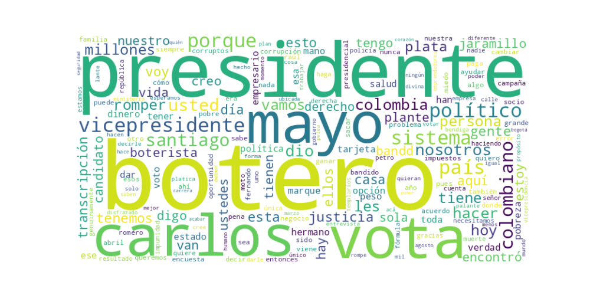

Seguidores: 232,442
1. Perfil de Comunicación: El candidato emplea un estilo de comunicación marcadamente informal, directo y visceral, cercano al lenguaje callejero y alejado de los formalismos políticos tradicionales. Utiliza un registro coloquial, con frecuentes modismos colombianos, emoticones y un tono conversacional que busca conectar con el ciudadano común desde una posición de igualdad. Se presenta no como un político, sino como un "empresario" y un "vehículo de Dios", usando un lenguaje popular, a menudo confrontacional y cargado de expresiones fuertes para denunciar al establishment. La comunicación es altamente emocional y busca ser percibida como auténtica y "políticamente incorrecta".
2. Temas Principales: 1. Lucha contra la Corrupción y el Establecimiento Político: Es el eje central de su discurso. Retrata a la clase política tradicional (a la que llama "bandidos disfrazados de políticos", "políticos mañosos", "la misma mierda") como una élite corrupta, rapaz y responsable de todos los males del país. Ejemplo: "Los band!d0$ disfrazados de políticos y empresarios van a pagar por todos los negocios que han hecho con las carreteras!". 2. Seguridad y "Justicia Divina": Aboga por un enfoque de mano dura, proponiendo medidas extremas como la "pena de muerte para corruptos" y "ajusticiar" a los delincuentes. Enmarca la seguridad como una batalla moral. Ejemplo: "Con los band!d0$ lo que hay que hacer es AJUSTICIARLOS" y "proponemos pena de muerte para los corruptos". 3. Economía y Lucha contra la Pobreza: Promete "sacar a 27 millones de colombianos de la pobreza". Su propuesta económica se basa en recortes drásticos de impuestos (IVA al 7%, renta al 10%), apoyo directo con dinero en efectivo a emprendedores a través del "Plan Plante y Pa’lante", y presentar al Estado como un facilitador, no un obstáculo. Ejemplo: "Quitándole la plata a los band!d0$ disfrazados de políticos con todos esos impuestos que se inventan, nos volvemos potencia mundial!". 4. Anti-sistema y Renovación Total: Su propuesta no es de reforma, sino de ruptura. El eslogan #RomperElSistema sintetiza su promesa de acabar con las estructuras políticas y económicas actuales, presentándose como un outsider financieramente independiente. Ejemplo: "Yo no pertenezco a ningún partido político… con mis propios recursos quiero ayudar".
3. Tono y Sentimiento Dominante: El tono es profundamente confrontacional, crítico y mesiánico. Domina la indignación y la denuncia virulenta contra la clase política. Simultáneamente, proyecta una certeza absoluta y un optimismo basado en su autoproclamada misión divina y capacidad empresarial. Es un tono que combina la rabia contra "los de arriba" con una promesa de salvación y prosperidad para "los de abajo", siempre desde una posición de superioridad moral y práctica frente al "sistema".
4. Palabras Clave de Poder: * #RomperElSistema / Romper el Sistema: Eslogan central y hashtag omnipresente. * Bandidos / Band!d0$: Término genérico para referirse a políticos, empresarios corruptos y delincuentes. * Botero Presidente: Afirmación repetitiva como mantra de campaña. * Justicia Divina: Marco religioso para su proyecto político de mano dura. * 27 millones de pobres: Meta cuantificada y repetida constantemente. * Platica para los colombianos: Promesa concreta de beneficio económico directo. * (Dar) Balín / Ajusticiar: Léxico asociado a la solución violenta y definitiva contra la corrupción y la delincuencia. * Políticamente incorrecto: Autodefinición que busca diferenciarse y validar su lenguaje directo.
5. Conclusión Estratégica: La estrategia de comunicación de Santiago Botero está diseñada para capitalizar el profundo descontento y la antipolítica. Se dirige a un electorado frustrado, principalmente de clases populares y medias bajas, que desconfía por completo de las instituciones y anhela un cambio radical y punitivo contra las élites. Su discurso busca evocar indignación, esperanza de redención económica y una adhesión casi religiosa a su figura como el "elegido" (por Dios y por su éxito empresarial) para purgar al país. Más que persuadir con planes técnicos, moviliza mediante la emoción, la polarización (ellos vs. nosotros) y la promesa de una transformación total liderada por un outsider con recursos propios y una misión divina. Es una comunicación de guerra política, no de diálogo.
REPORTE ESTRATÉGICO: ANÁLISIS DEL CORPUS DE ÉXITO EN REDES SOCIALES
1. Resumen del Patrón de Éxito: El éxito del candidato se basa en una fórmula de populismo confrontacional directo y narrativa de origen. Combina una comunicación cruda, propia de redes sociales (con un lenguaje cercano, coloquial y en ocasiones agresivo), con una historia personal de superación que lo posiciona como un "outsider" legítimo. No es un discurso pulido, sino visceral y emocional, que apela al hartazgo y construye un "nosotros" (el pueblo, los trabajadores) frente a un "ellos" (la clase política corrupta).
2. Tácticas de Comunicación Clave: * Definición de un Enemigo Claro y Confrontación Maniquea: Establece una dicotomía poderosa entre "ellos" (los políticos mañosos, bandidos, la corrupción) y "nosotros" (él y los colombianos honestos). Usa un lenguaje combativo ("pelea", "lucha", "a las buenas o a las malas") y acusaciones directas ("si usted defiende al bandido es porque usted es bandido"). * Autenticidad a través de la Biografía y Lenguaje Coloquial: Su relato de vida es su principal activo. Se presenta como un vendedor ambulante que triunfó como empresario, lo que le da credibilidad para hablar de pobreza y emprendimiento. Usa términos como "berraca", "pilas", "platica", "dar balín", creando un puente con el lenguaje de la calle y distanciándose del discurso político formal. * Llamados a la Acción Concretos y Simples: Las peticiones son directas y fáciles de ejecutar: "Este 31 de mayo, vota", "dense una pasadita, cojan un volantico", asistiendo a un evento específico. Transforma el apoyo en una acción inmediata y tangible. * Posicionamiento como Outsider Independiente: Se recalca constantemente la autofinanciación ("nos pagamos la campaña") y la falta de jefes políticos, económicos o vínculos con actores armados. Esto refuerza su discurso antisistema y lo presenta como la única opción "pura" y no corrupta.
3. Temas de Mayor Resonancia: * Lucha contra la Corrupción y "los Políticos Bandidos": El eje central. Presenta la política tradicional como una cleptocracia de la que él es el destructor designado (#RomperElSistema). * Desigualdad Económica y Pobreza: Usa cifras concretas (27 millones, 31 millones, 800.000 pesos) para evidenciar el problema y promete programas directos de transferencias de dinero ("Plante y Pa'lante"). * Seguridad y Orden: Adopta un discurso de mano dura contra la delincuencia ("bandidos"), cuestionando el enfoque de los derechos humanos cuando, en su visión, protegen a criminales. A la vez, muestra apoyo a las fuerzas militares. * Emprendimiento y Economía Popular: Se dirige específicamente a vendedores informales y pequeños empresarios, hablando desde la experiencia propia y ofreciendo apoyo concreto.
4. Perfil de la Audiencia Implícita: Le habla a un electorado joven y/o popular, desencantado y cansado del establishment político. Es una audiencia que consume contenido en redes, valora la autenticidad por encima de la pulcritud, se siente ignorada por el sistema y responde a un mensaje claro de confrontación y cambio radical. También busca conectar con emprendedores informales y clases trabajadoras que se identifican con su historia de esfuerzo y su promesa de beneficios económicos directos.
5. Conclusión Estratégica: La clave fundamental de su poder discursivo es la credibilidad performativa. No solo critica el sistema; encarna físicamente y en su forma de hablar la antítesis del político tradicional. Su biografía es su programa, y su lenguaje informal es la prueba de su autenticidad. Mientras un discurso político tradicional busca persuadir con argumentos y propuestas, su discurso busca validar y amplificar el resentimiento existente en un sector del electorado, ofreciéndose no como un político más, sino como un instrumento de venganza popular y reparación económica inmediata. Su potencia radica en ser un símbolo de ruptura creíble, donde el mensaje y el mensajero son indistinguibles y se refuerzan mutuamente.

Caption: Este 7 y 8 de marzo es el campeonato de Call Of Duty, pendientes que a todos les va a llegar la información 🫡 y pilas con el que se ponga de hacker o band!d0!! @carlosfernando.cuevas @callofdutylatam #RomperElSistema⚒️ #SantiagoBoteroJaramillo
Likes: 7,719 | Comentarios: 92 | Reproducciones: 63,663
Ver en InstagramCaption: Así apoyamos este 8 de marzo a nuestro CANDIDATO AL SENADO @yonatanboteroalzate ⚒️🙏🏼 @carlosfernando.cuevas #RomperElSistema⚒️ #SantiagoBoteroJaramillo
Likes: 2,440 | Comentarios: 96 | Reproducciones: 29,441
Ver en InstagramCaption: Saben cuáles son los políticos mañosos que van al congreso este 8 de marzo? Para que tengan claro cómo votar y por quién @yonatanboteroalzate @wmanzur @marthaperaltae @senadorjuliochagui @alvarouribevelez @santiagobotero.jaramillo #romperelsistema⚒️ #carlosfernandocuevas
Likes: 3,399 | Comentarios: 55 | Reproducciones: 50,968
Ver en Instagram